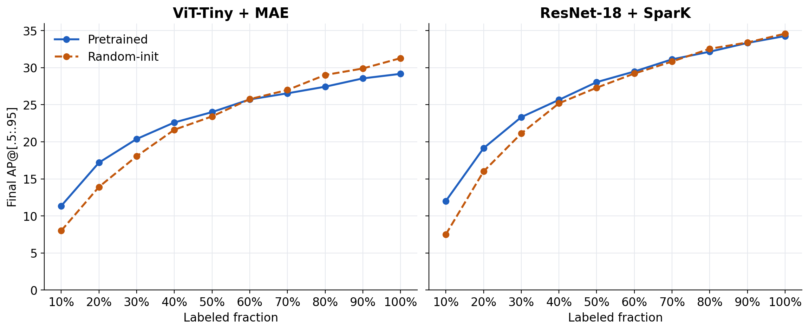
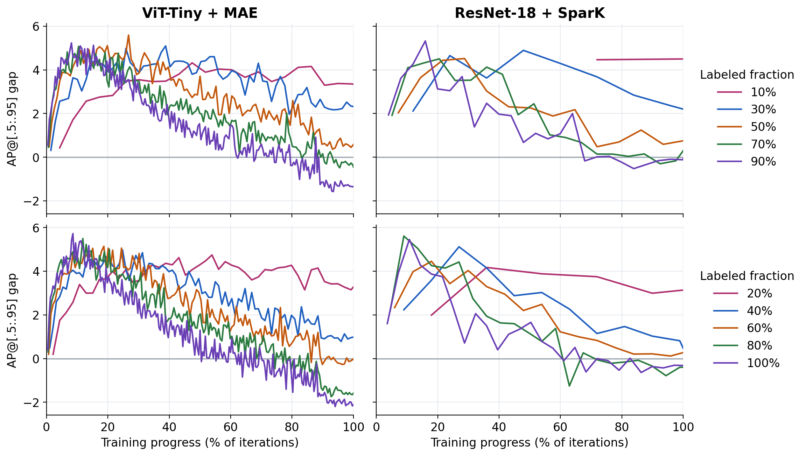
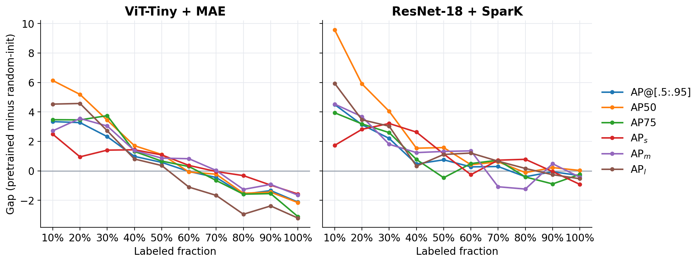

How much does masked pretraining on unlabeled images help, and how does that change as labels shrink?
The fewer the labels, the more pretraining helps. It helps the ViT more than the ResNet-18, because a ViT has to learn from data that nearby pixels are related, while a CNN has that built in.
He et al., 2022. Hides 75% of image patches, encodes only the visible ones, and reconstructs the missing pixels.
Li et al., 2022. A plain ViT pretrained with MAE is a competitive detection backbone without a pyramid design.
Tian et al., 2023. The CNN counterpart: sparse convolutions and a hierarchical decoder bring masked pretraining to ResNets.
No shared protocol across papers, no sweep over labeled-set size, and pretraining on ImageNet, outside the detection data.
We hold everything fixed except how the backbone starts.
Within each arm, the pretrained and random-init runs share the detector, augmentation, schedule, and evaluation code.
Pretraining uses the same COCO images the detector trains on, with annotations withheld. No ImageNet.
Train on 10% to 100% of the labels, in nested splits, to see how the gain changes as labels shrink.
| Arm | Backbone | Pretraining | Detector |
|---|---|---|---|
| Transformer | ViT-Tiny | MAE | ViTDet |
| CNN | ResNet-18 | SparK | Faster R-CNN + FPN |
Only differences: starting weights and layer-wise learning-rate decay.
| Arm | Epochs | Batch | Iterations at 100% |
|---|---|---|---|
| ViT-Tiny | 100 | 16 | 115,888 |
| ResNet-18 | 12 | 16 | 13,906 |
Every fraction trains for the same number of epochs, so iterations scale with the number of images.
Hardware: 2 V100 GPUs (32 GB) per run.

From 70% labels up, the random-init ViT outperforms the pretrained ViT, by 2.1 AP@[.5:.95] at 100%.


| Limitation | Effect |
|---|---|
| One seed per run | We cannot tell how much of a small gap is run-to-run noise, including the random-init ViT's lead from 70% labels up. |
| Tiny backbones | ViT-Tiny and ResNet-18 score well below the larger backbones in the original papers. |
| Reduced dataset | Training on 18,542 images of 9 classes lowers absolute AP@[.5:.95] further. ViTs need more data than CNNs, and MAE pretrained on these 18,542 images instead of ImageNet's 1.28 million, which may explain the random-init ViT's lead from 70% labels up. |
| ViT batch size reduced | 64 in the ViTDet recipe, 16 here to fit 2 V100 GPUs, with the learning rate scaled down to match. |
Limited compute restricted this study to a first look at the trend. Scaling each part of it up would give a more complete picture.
Several seeds per run, to put error bars on each gap.
ViT-B and ResNet-50, the sizes the original papers used.
All 80 classes and 118k training images.